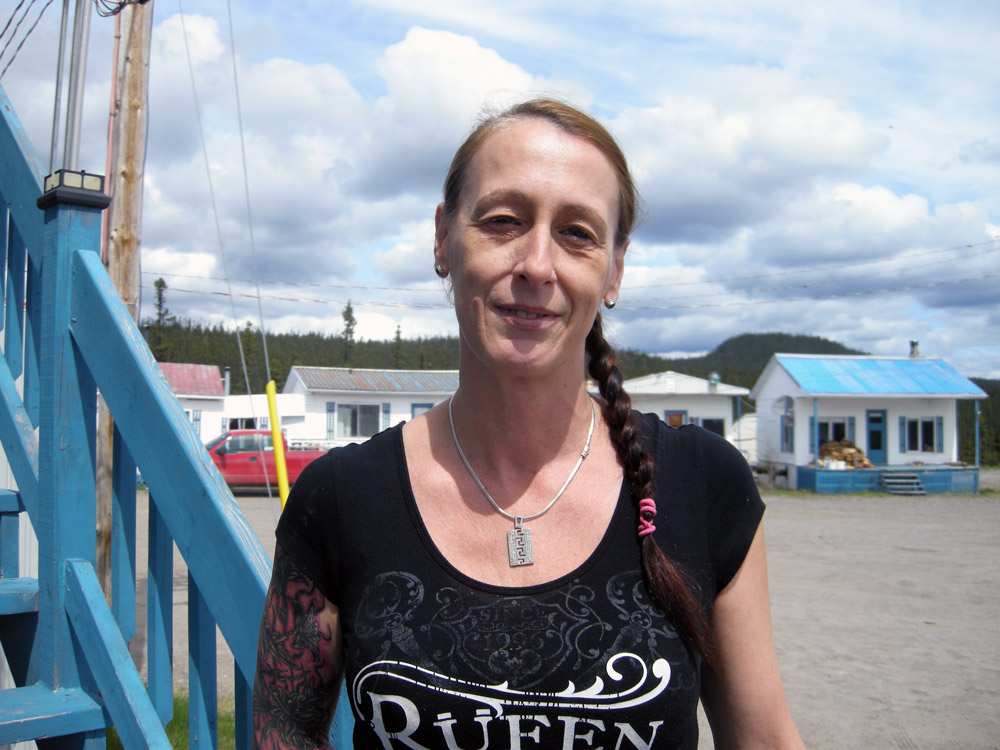

SUR LA ROUTE 389
Routiers de l’infini
Sur la Basse-Côte-Nord, on peut rejoindre Blanc-Sablon en faisant un énorme arc de cercle par le Nord québécois et le Labrador terre-neuvien. Le Devoir a fait le long périple et bouclé la boucle de Baie-Comeau à Baie-Comeau, une distance de près de 3000 km, d’abord par la route, puis en bateau sur le golfe du Saint-Laurent. Compte rendu d’un voyage insolite et fascinant dans l’immensité sauvage. Deuxième article de huit.
- Par Monique Durand -
On roule dans le jour clair. Oubliée, la belle et sinueuse route asphaltée qui nous avait menée de Baie-Comeau à Manic 5. Place maintenant à des portions de route droites comme des fils, ponctuées de côtes immenses. Et place au gravier ! Sur 40, puis 50 kilomètres. On se dit que l’asphalte reviendra bien, allez !
Eh non ! Devant soi et tout autour, un camaïeu de vert. Les trembles et les bouleaux font des taches vert pomme dans les montagnes plus foncées, où dominent les épinettes au cœur noir. Bientôt 80 kilomètres de gravier, puis 90. Ça finira bien un jour, qu’on se dit ! Gravier encore, toujours. Soudain, enfin, c’est pas trop tôt, l’asphalte ! Et, au loin, comme une apparition, des toits de couleur rouge orangé, touches brillantes de vie. On a envie de crier de joie, d’embrasser son volant, on est sauvé.
Vies du bout du monde
Dans cette oasis, un restaurant, six motels et une pompe à essence à 1,77 $ le litre. C’est l’incontournable Relais Gabriel du kilomètre 316. Il n’y avait rien avant, pendant 100 kilomètres, il n’y aura rien après, pendant 250 kilomètres. « Je reviens dans l’humanité quand je vois les toits orange », dit Patrick Enright, un routier de l’infini. Il fait la navette entre Varennes et Blanc-Sablon tous les quinze jours : 5000 kilomètres aller-retour, une véritable épreuve d’endurance.
« Deux cheese, ketchup, moutarde ! » lâche-t-il en ouvrant la porte du restaurant, chaque fois comme s’il venait d’échapper à quelque chose, juste content d’arriver avec tous ses morceaux. Nathalie Ruel, la serveuse du Relais Gabriel, connaît Patrick comme elle connaît la plupart des routiers qui empruntent la Trans-Québec–Labrador. Début de la cinquantaine, elle a travaillé 27 ans à l’urgence de l’hôpital Saint-François d’Assise, à Québec. Un jour, elle en a eu marre de vivre en courant du matin jusqu’au soir. C’est par Emploi-Québec qu’elle a trouvé ce boulot.
« Je n’étais jamais venue dans cette région avant. » Elle habite un petit chalet, au bord d’un lac à deux pas du restaurant. « Si t’aimes pas la nature, t’es malheureux ici. » « À vrai dire, poursuit-elle, je ne savais pas que j’aimais la nature à ce point. » Elle n’avait jamais eu le temps de s’en rendre compte. « J’ai vécu étourdie en ville pendant des années. À courir sans arrêt. Après quoi ? J’sais pas. » Nathalie a un chien, un kayak et un poêle à bois. « La paix totale. »
Aventure extrême
Patrick Enright
Patrick dévore ses cheese. Il est conscient d’avoir une drôle de vie. Une vie de solitaire. « Quinze heures d’affilée à me parler à moi-même dans mon camion, c’est quelque chose. On a toutes sortes de pensées, des fois un peu noires. On écoute Radio-Canada parce que ça parle français. Et Sirius XM pour la musique. »
Il est aussi conscient de vivre une vie de dangers. « L’hiver, ces routes-là, c’est de l’aventure extrême ! » Des histoires d’horreur, Patrick en a plein sa besace. Des camions qui renversent avec toute leur charge, incontrôlables parce que le chemin devient tout à coup une patinoire vive. — « C’est “le savon” qu’on redoute le plus, un mélange de slotche, d’eau, de gravelle et de neige. » — Ou parce qu’un orignal est venu se jeter sous les roues. Ou que la route est trop pentue, trop cabossée ou trop étroite.
Un jour, il a fait une sortie de route dans un blizzard. « J’ai appelé les secours sur mon téléphone-satellite, j’ai mis mon suit de survie, creusé un trou dans la neige pour ne pas crever gelé et j’ai passé trois heures dans mon igloo à attendre la dépanneuse. C’est ça, la réalité de la route Trans-Québec–Labrador ! Ceux qui font des “voyages de bananes” en Californie ne font pas le même métier que moi ! »
Des routes à réparer
Il y a quelques années, le Comité Route 389, formé d’une quinzaine d’intervenants, la SQ, Hydro-Québec et des représentants de l’industrie forestière notamment, avait répertorié, sur les 570 kilomètres de la 389, pas moins de 338 courbes dites « sous standard », soit le quart du parcours total, 230 pentes supérieures à 7 %, l’absence d’accotement asphalté et une route trop étroite sur toute sa longueur.
Cet été, le ministère des Transports du Québec a entrepris des travaux majeurs pour en améliorer la sécurité, travaux qui s’étireront jusqu’en 2021 et jusqu’à Fermont. Des courbes seront atténuées, des tronçons élargis, l’asphaltage sera fait ou refait, des ponts et ponceaux seront réparés.
Dans un mémoire remis au BAPE il y a quelques mois, les associations touristiques de la Côte-Nord incitaient Québec à faire aussi bien que Terre-Neuve dans la réfection de la route Trans-Québec–Labrador, afin qu’elle cesse d’être perçue comme plus médiocre et dangereuse du côté québécois que du côté labradorien.
André Ouellet a dirigé la SQ à Fermont pendant quelques années. La 389, il la connaît par cœur. « Terre-Neuve, dit-il, fait pression sur Québec pour qu’elle soit améliorée. C’est la seule issue pour les Terre-Neuviens ! Sinon, ils doivent faire le grand tour et passer par le Cap-Breton pour rejoindre le reste du pays. »
Terre-Neuve a déjà remporté la mise en ce qui a trait à l’appropriation du territoire par les voies routières dans l’est du Canada, s’étant désenclavée en parachevant un lien routier qui rejoint la 389 québécoise, depuis le détroit de Belle Isle. Du côté du Québec, les communautés situées dans la partie ouest de la Basse-Côte-Nord, entre Kégaska et Vieux-Fort, sont toujours isolées du reste du pays, réclamant à cor et à cri depuis des décennies que soit enfin parachevée la fameuse route 138. Bref, s’il y a encore quelques communautés labradoriennes enclavées le long de l’Atlantique, il n’y a plus d’insulaires terre-neuviens enclavés, alors qu’il y a encore des Québécois, le long du golfe du Saint-Laurent, qui le sont.
Au péril d’une vie
 Nathalie Ruel
Retour au Relais Gabriel. Patrick n’a jamais eu d’accident sur la route. Il croise les doigts. Un collègue routier, Michel Porlier, a eu moins de chance. « Il y a un an, le 24 avril 2015 exactement, raconte Michel, j’ai pris le fossé avec mon camion chargé de nourriture. C’était la nuit. Il faisait –15 degrés. J’ai réussi à sortir par une fenêtre. Et j’ai attendu les secours pendant une heure. » L’heure la plus longue de sa vie. « J’entendais les loups hurler autour de moi. » Michel ne s’en est pas remis. Il n’a plus voulu remonter à bord de son mastodonte et a pris sa retraite du camionnage sur-le-champ.
Pourtant, allez donc y comprendre quelque chose, il s’ennuie de cette vie-là, sur cette route de malheur. C’était la vraie vie, pas ordinaire, une vie intense, menée souvent la peur au ventre, faite d’exploits racontés jusqu’à plus soif, une existence vécue sur le flanc des volcans. De ça, ces routiers au long cours ne peuvent plus se passer. « Une passion folle », dit Patrick.
Nathalie lui a servi un café fumant. « Je reçois des gars en choc post-traumatique, dit-elle. Ils arrivent ici, rescapés par un autre camionneur, pour attendre l’ambulance. Ou arrivent en tremblant comme des feuilles parce qu’ils ont évité un drame de justesse. » Le Relais Gabriel est leur bouée. Et Nathalie, l’ancienne infirmière, une sorte de mère. « Je les rassure de mon mieux. » Le Relais Gabriel, c’est un phare dans la nuit redoutable des usagers de la 389.
Notre camionneur s’apprête à repartir. Patrick ne veut pas arriver trop tard à Churchill Falls, où il a l’habitude de passer la nuit sous les étoiles du Nord, blotti dans son camion, « mon condo », dit-il en souriant. Après, il lui restera « seulement 900 kilomètres », insiste-t-il, l’air moqueur, pour atteindre Blanc-Sablon. « Les gens là-bas attendent leur pain, leur lait, leurs fruits et légumes. Faut pas qu’il m’arrive quoi que ce soit ! » Une dame prend des photos du camion quand il fait son entrée à Blanc-Sablon et les poste sur Facebook.
Le voilà qui décolle dans un nuage de poussière. La grosse boîte de son camion, remplie de tomates et de laitues, disparaît au-dessus de la côte. « Je suis attendu là-bas comme un roi. »
- À lire aussi, le 1er épisode - « Péninsule du Labrador: la grande boucle »
- La semaine prochaine : « L’oeil du Québec »